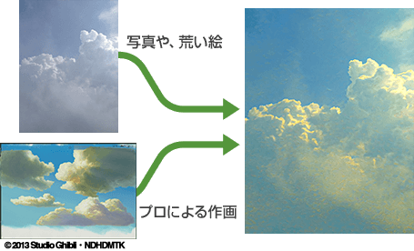

- Permite realizar un escaneo secuencial de forma eficiente de acuerdo a los números de intermedios de animación.
- Compatible con 4 modos de escaneo.
(blanco y negro, en colores, con o sin binarización) - Es posible guardar las opciones de escaneo. Es posible reproducir los procesos cuando es necesario reescanear algunas tomas.
- Compatible con el estándar TWAIN.
También se han liberado los efectos desarrollados por Dwango
Los efectos desarrollados por el equipo de investigación y desarrollo de Dwango también han sido liberados. Esto incluye efectos para cambiar de forma automática el estilo de las imágenes mediante la aplicación de tecnología de aprendizaje profundo o efectos como el que permite producir una incidencia de la luz, al estilo de la que se producía en trabajos clásicos, de antes de la digitalización de los entornos de producción.
Estilización de imágenes
Efecto de luz incidente

Distorsión ondulada